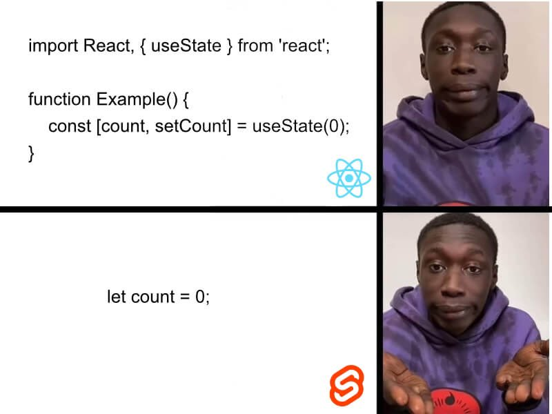

对数据库的爱有多少可以重来？
王福强
#从数据库谈到组织和人才发展#
今天中午吃饭，邵总提到说，金融机构大部分系统都是直接捅数据库，然后我就把这个话题扔到某个地方访问不到的网站上， 发现讨论挺激烈的，遂觉得这个话题值得展开来说说…
其实对于金融机构来说，或许直接捅数据库才是最务实的做法。 只要数据库够强劲，有何不可？
软件无非就是解决两个问题： 存储与计算， 如果数据库可以通过SQL更好的搞定这些， UI + DB不是很合理吗？ Oracle为啥牛逼？ 不就是可以让你直接捅、随便捅吗？
现在很多应用和系统都搞分层、搞治理，无非还不是因为标准化生产的大背景下组织结构和边界决定的吗？ 有多少核心系统需要重点关注？ 又有多少非关键系统需要那么精细化的设计与治理？！

真正的高手从来不是谁掌握最高深的技术， 而是谁能根据具体场景选择最为合适的技术。工具箱里千万般工具，当下只择最合适的那个，这才叫牛逼。
每家企业所处的阶段不一样， 组织和文化的土壤不一样，人和工作的思路更是不一样， 天天学阿里、学字节你就能成为阿里和字节吗？ 别做梦了，多少老板都没想明白，你看到的阿里和字节只是结果， 而阿里和字节怎么成长为今天的样子、投入了多少资源、付出了多少心力、脑力和体力，你绝对是意想不到， 这也是为啥我会觉得很多老板抱怨地很non-sense，说自己找了个高P、找了个C_O却发现没什么鸟用， 其实大部分情况下一定没鸟用，但这个没鸟用不赖你找来的人，更应该赖CEO自己，因为你没有营造出适合这些人发挥作用的土壤和环境，而这东西也是大平台极具竞争力的地方，更是他们不会show给你看的地方。当然，很多时候show给你也没啥鸟用，就跟人一样，活到最后，都是活个自己，公司和组织更是。
这些话，听明白的就明白了，听不明白的也就没必要听了， 晚安~
「为AI疯狂」星球上，扶墙老师正在和朋友们讨论有趣的AI话题，你要不要⼀起来呀？^-^
这里
- 不但有及时新鲜的AI资讯和深度探讨
- 还分享AI工具、产品方法和商业机会
- 更有原价1000多的付费内容(近500分钟)等着你，加入星球(https://t.zsxq.com/0dI3ZA0sL) 即可免费领取!